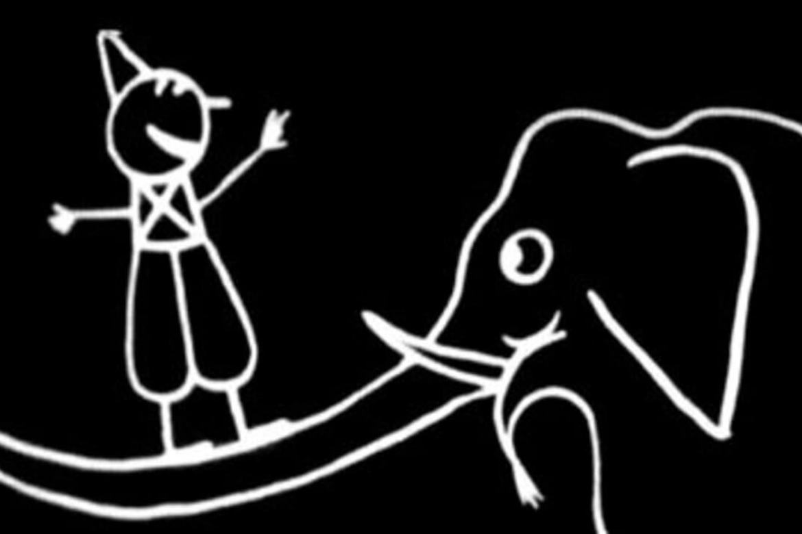

Quais foram as primeiras animações?
Responder a esta pergunta é muito difícil, pois depende do que cada um considera com animação. Mostraremos abaixo algumas das primeiras animações que surgiram:
Humorous Phases of Funny Faces (1906)

Esta é a animação que muitos consideram como a primeira do mundo a ser gravada em filme tradicional, visto que ela é um monte de fotos exibidas em sequência. Com a duração de três minutos, ela nada mais é do que inúmeros desenhos feios num quadro negro, misturando desenhos com técnicas de recorte, para auxiliar na movimentação do personagem.
Katsudo Shashin (1907)
Katsudo Shashin é uma animação japonesa, datada do ano de 1907. Esteve escondida por muito tempo, e ninguém sabe quem a criou até hoje. Apesar disso, a animação já mostrava do que este país seria capaz dali algum tempo.
Fantasmagorie (1908)
Criado por Émile Cohl, as ilustrações foram feitas todas em preto numa superfície branca, porém, na hora de gravar, Émile gravou em negativo, para dar a impressão de um quadro negro de escola.
A técnica utilizada por esses artistas se chama Stop-Motion (ou quadro a quadro), que consiste em tirar várias fotos de alguma coisa e reproduzir as imagens em sequência, dando assim o efeito de movimento.
No caso das animações supracitadas, as sequências de frames eram feitas por desenhos com mínimas mudanças de ação entre si, sendo necessárias centenas de ilustrações. Para se ter uma ideia, a animação Fantasmagorie tem apenas 1:15 minutos, porém foram utilizadas cerca de 700 ilustrações.
Uma Senhora Colaboração
Em 1915, o polaco-americano Max Fleischer inventou uma técnica chamada Rotoscopia. Esta técnica permite que você utilize gravações reais como base de movimentação para o personagem, seguindo os moldes da gravação.
Max é um dos maiores nomes destas primeiras décadas, tendo também no seu "currículo" uma incrível animação do Super Man. Em 1934 a patente da rotoscopia expira, fazendo com que o trabalho de Max virasse global.
Depois disso, surgiram inúmeros estúdios de animação, porém os que mais se destacaram foram Disney, Pixar, Dream Works, Sony Pictures Animation, Warner Bros e Ilumination.
Com a evolução da técnica criada por Max, surgiram as animações como vemos hoje. Pela sua incrível contribuição para o ramo de animação, devemostodos ser gratos a ele.